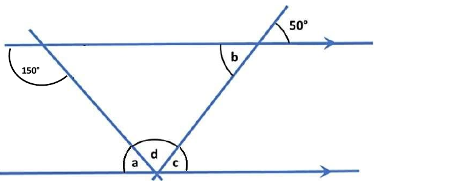
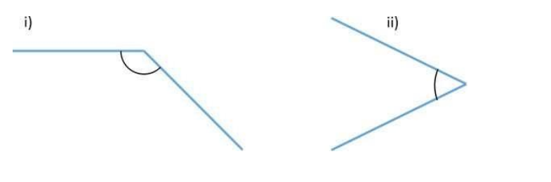
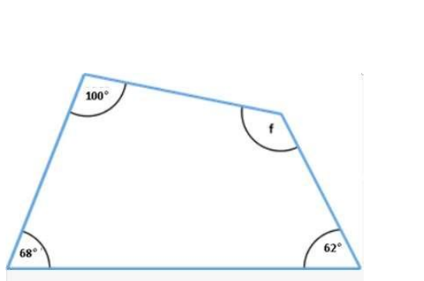
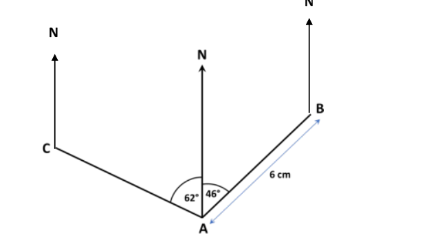
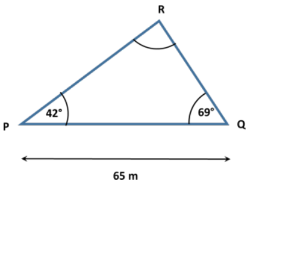
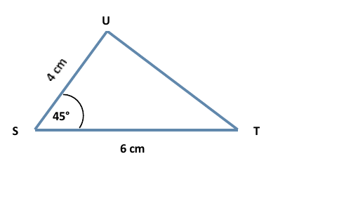

Module 3 · Assignment 3
Assignment — questions & solutions
Original Wolsey Hall assignment questions (with diagrams redrawn) followed by worked answers. Allow ±2° tolerance on protractor / construction measurements.
Question 1 — Find a, b, c and d (8 marks)
The diagram is not drawn to scale. Show clearly how you found each angle, using correct mathematical terms (e.g. alternate angles).

30° + d + 50° = 180° → d = 100°.
Or: angles in the triangle 30° + 50° + d = 180°.
Question 2 — Measure these angles (2 marks)

Question 3 — Regular polygon (4 marks)
A regular polygon has an interior angle of 172°. Find the exterior angle and work out how many sides it has, making your method clear.
Exterior = 180° − 172° = 8°.
For a regular polygon, exterior × n = 360°.
n = 360 ÷ 8 = 45 sides.
Question 4 — Quadrilateral (5 marks)
(a) Show how you could calculate the angle marked f. (b) Measure each side, write the lengths on the diagram and construct the quadrilateral afresh.

f = 360° − 100° − 68° − 62° = 130°.
2. On fresh paper, accurately draw the bottom side.
3. Use a protractor at each end to draw rays at the given angles (68° at the bottom-left, 62° at the bottom-right).
4. Measure along each ray to mark the next vertex at the correct distance.
5. Join the two upper vertices to complete the shape.
Check: top-left should measure 100°, top-right 130°.
Question 5 — Map scale (3 marks)
A map has a scale of 1 : 250 000. How many centimetres on the map is a journey of 40 km?
40 km = 40 × 1000 × 100 = 4 000 000 cm.
Map distance = real ÷ scale factor = 4 000 000 ÷ 250 000 = 16 cm.
Question 6 — Three towns (6 marks)
Diagram: Alton (A) at the bottom; Bolton (B) is to the upper-right with AB = 6 cm; Carlton (C) is to the upper-left. Each town has a North line. Scale: 1 cm to 2.5 km.

Back bearing = forward + 180° (since forward < 180°).
= 046° + 180° = 226°.
Back bearing = forward − 180° (since forward > 180°).
= 298° − 180° = 118°.
Question 7 — Boat journey (4 marks)
A boat starts at A. It travels 7 km on a bearing of 135° to B. From B it travels 12 km on a bearing of 250° to C. Using a scale of 1 cm : 1 km, draw a diagram to show these bearings and journeys.
2. Use a protractor: measure 135° clockwise from A's North line and draw a ray.
3. Along that ray, measure 7 cm and mark B.
4. At B, draw a new (parallel) North line straight up.
5. Measure 250° clockwise from B's North line — i.e. into the south-west region — and draw a ray.
6. Along that ray, measure 12 cm and mark C.
Check: 135° points roughly south-east; 250° points roughly south-west.
Question 8 — Triangle PQR (4 marks)
Construct the triangle below using a ruler and protractor. PQ = 65 m, angle P = 42°, angle Q = 69°. Use a scale of 1 cm : 10 m. (Diagram is not to scale.)

2. At P, draw a ray at 42° above PQ.
3. At Q, draw a ray at 69° above PQ.
4. Where the two rays meet is R.
Question 9 — Triangle SUT (4 marks)
Construct the triangle below using a ruler and protractor. SU = 4 cm, ST = 6 cm, angle S = 45°. Scale 1 cm : 10 m. (Diagram is not to scale.)

2. At S, draw a ray at 45° above ST.
3. Measure 4 cm along that ray and mark U.
4. Join U to T to finish.
T = 180° − S − U = 180° − 45° − 93° ≈ 42°.